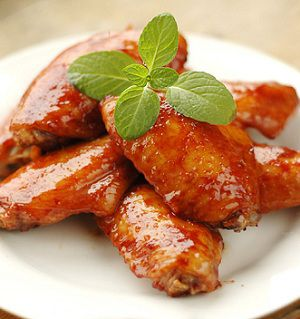

Cùng bắt tay làm thử thôi nào!
Nguyên liệu làm món cánh gà roti
- Cánh gà: 1kg (bạn có thể sử dụng đùi gà theo sở thích nhưng cánh gà sẽ ngon hơn đấy).
- Rau xà lách: 200g.
- Cà chua: 2 quả.
- Nước dừa tươi: 150ml.
- Lá chanh non: 100g.
- Ớt trái: 2 quả
- Gia vị: Hạt nêm, bột ngọt, nước mắm, dầu hào, hạt tiêu, ớt bột, tỏi, hành tím, sả, gừng.
Sơ chế nguyên liệu
- Cánh gà: Rửa sạch với một chút muối và gừng để cánh gà sạch và săn chắc hơn, dùng dao cứa nhẹ để gia vị nhanh thấm và khi món ăn hoàn thành trông sẽ đẹp mắt hơn. Nếu cánh gà loại lớn bạn có thể chặt làm đôi cho vừa ăn nhé.
- Ướp cánh gà với hạt nêm, một chút dầu ăn, ớt.
- Sả, hành tím, tỏi: Rửa sạch, băm nhuyễn, để riêng từng thứ.
- Rau xà lách: Rửa sạch, tách riêng từng lá.
- Cà chua: Rửa sạch, thái lát tròn.
- Lá chanh non: Rửa sạch, thái sợi chỉ.
- Làm nước sốt để rô ti gà: Các bạn sử dụng 1 thìa tỏi, 1 thìa hành, 2 thìa sả đã băm nhuyễn trộn với 150ml nước dừa tươi, 1 chút hạt nêm, nước mắm, 1 thìa dầu hào trộn thật đều lên với nhau
Cách thực hiện
- Cách 1: Chiên cánh gà sao cho vàng đều. (Bạn có thể sử dụng một ít muối tinh đảo nhẹ trên chảo, đến khi muối chuyển sang màu vàng nhạt thì đổ ra rồi mới đổ dầu ăn vào chiên thì sẽ đảm bảo cánh gà không bị dính và có màu đẹp mắt hơn). Sau đó đổ nước sốt lên gà, đảo đều cho tới khi nước sốt sít lại gần cạn là được. Sau khi chuẩn bị tắt bếp thì rắc lá chanh lên cho thơm.
- Cách 2: Cho gà và nước sốt trộn đều với nhau, rồi đun lửa nhỏ liu riu cho tới khi nước sốt sền sệt là được, nhớ phải đảo đều để gà không bị cháy và cánh gà màu vàng cánh gián đều đẹp, chín mà không bị nát. Sau khi chuẩn bị tắt bếp thì rắc lá chanh lên cho thơm
Yêu cầu món ăn
- Cánh gà vàng đều, ngấm gia vị, vừa ăn.
- Món ăn có mùi thơm nhẹ của sả và lá chanh non rất hấp dẫn.
- Khi ăn, thịt gà săn chắc, ngấm đều gia vị, nước sốt bao quanh đều cánh gà rất thơm kết hợp với vị ngọt thanh của nước dừa tươi sẽ khiến cả gia đình bạn rất ngon miệng đấy.
Trình bày món ăn
- Bạn sử dụng rau xà lách, cà chua đã thái lát xếp đầu trên vành đĩa;
- Xếp cánh gà vào giữa, rắc lá chanh non đã thái chỉ lên trên và một chút xíu hạt tiêu nữa nhé. Lá chanh non ăn kèm với món này là rất hợp khẩu vị đấy.
- Bạn cũng có thể sử dụng ớt trái tỉa hoa trang trí để tăng thêm tính hấp dẫn của món ăn nữa nhé.
Trên đây là cách làm món cánh gà roti thơm ngon mà cachlam9.com muốn giới thiệu cho các bạn, nó thật đơn giản phải không? vậy còn chần chừ gì nữa, hãy bắt tay vào việc thực hiện ngay đi nào. Chúc các bạn có được món ăn ngon miệng.